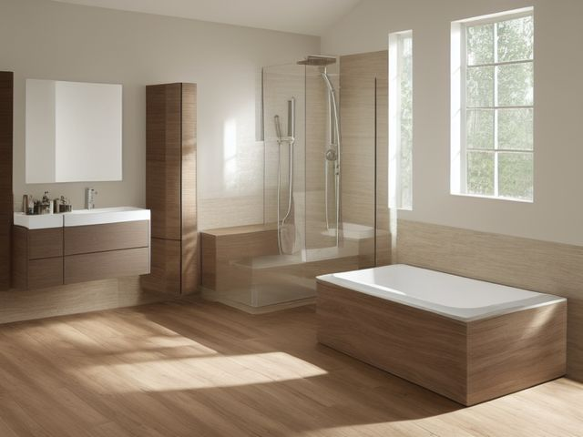

Primary Bathroom micro zone
The Shower or Tub
To keep only the products actually in use within reach, on surfaces that dry out between showers.
One session: 30-45 min. most of it waiting on the cleaner to work, so run the counter or the toilet meanwhile

What done looks like
One shampoo, one conditioner, one wash, and one bar per person in the caddy. A squeegee on its hook inside the enclosure, grip strips or a mat with real suction on the floor, and no dark line where the wall meets the tray.
Check these before you start
- FallSoap film on wet glaze, worst at the moment you step over a high tub wall. Grip strips or a mat that truly grips, and a grab bar if anyone in the house is unsteady.
- Fall, cut, or crushA razor resting on the tub edge at exactly the height a child grabs to steady themselves. High hook, out of reach, every single time.
What to have on hand before you start
These are types of thing, not brands. If you already own something that does the job, that is the right one to use. Each says which pass needs it and what to watch out for.
- Bathroom grime and soap-film cleaner
Clean tubs, showers, sinks, and tile, in the Shine pass.
Never mix cleaners; verify stone compatibility. - Color-coded microfiber cloth set ×12
Wipe, dust, and dry surfaces, in the Shine pass.
Wash by use color; avoid fabric softener. - Neutral pH multi-surface cleaner
Routine cleaning of sealed surfaces, in the Shine and Sustain passes.
Verify surface compatibility; lock around children and pets. - Compact vacuum with attachments
Remove dust, crumbs, and debris, in the Shine pass.
Use appropriate attachment. - Keep, Relocate, Donate, Recycle, Trash container set ×5
Support rapid item routing during Sort, in the Sort pass.
Do not block exits. - Portable cleaning caddy
Transport and contain cleaning inputs, in the Straighten, Shine and Sustain passes.
Secure chemicals from children and pets. - Portable label maker
Create durable standardized labels, in the Standardize and Sustain passes.
Follow surface and adhesive guidance. - Removable write-on labels
Create temporary or adjustable visual controls, in the Standardize pass.
Test on delicate finishes.
Only if your shower or tub has one: 7 more
Not every shower or tub needs these. Each one is here because some do, and the reason is next to it.
- Shower Caddy
Contain current bathing products, in the Straighten, Standardize and Sustain passes.
Do not overload; anchor wall-mounted or tall systems where required. - Shower Squeegee
Support fast after-use water removal, in the Straighten, Standardize and Sustain passes.
Do not overload; anchor wall-mounted or tall systems where required. - Open Front Bin Small ×4
Provide one-motion access to frequently used items, in the Straighten, Standardize and Sustain passes.
Do not overload; anchor wall-mounted or tall systems where required. - Lockable Medicine Box
Secure prescriptions or high-risk products, in the Straighten, Standardize and Sustain passes.
Do not overload; anchor wall-mounted or tall systems where required. - Towel Shelf Basket ×3
Contain towels and linen sets, in the Straighten, Standardize and Sustain passes.
Do not overload; anchor wall-mounted or tall systems where required. - Floor-material-compatible cleaner
Clean sealed hard floors, in the Shine and Sustain passes.
Match cleaner to floor material. - Moisture Absorber or Humidity Monitor
Detect and reduce moisture risk in enclosed storage, in the Safety and Sustain passes.
Install and use according to product instructions.
The six passes, in order
Work them in this order. Sorting after you have arranged things means arranging things you were about to remove.
Sort
Decide what stays. Everything else leaves the zone now.
Line every bottle along the tub edge and shake each one. The ones you cannot remember using this month, the conditioner that did nothing, and the hotel bottles all leave, and the nearly-empty ones get finished this week or poured together.
Straighten
Give what stays a home, placed where the hand actually reaches.
Give each person their own shelf or corner of the caddy instead of one mixed crowd, and hang the squeegee where a wet hand meets it without leaning out over the tub wall. Bottles go cap-down only if they truly seal, otherwise they ring the shelf.
Shine
Clean it, and use the cleaning to inspect what you cannot see when it is full.
Spray the walls and the tray, then step out and do the counter or the toilet while the cleaner works. Come back, wipe, rinse, squeegee glass and tile from the top down, and leave the door standing open.
Surface by surface, all 7 of them, with what to use on each.
Safety
Make the zone safe for everybody who uses it, including the shortest person.
Wet glaze under a film of soap is the most slippery surface in the house, so the mat or the grip strips are not optional, and a grab bar is a morning's work to fit. Razors go on a high hook, never on the tub edge where a small hand reaches for balance.
Standardize
Write down the best way you know today, so it survives you forgetting.
Hold the caddy to a bottle limit: a new bottle comes in only on the day an empty goes out. The squeegee has one hook and hangs on it wet, every time.
Sustain
Attach the reset to something that already happens, so it keeps itself.
Last person out squeegees the glass and the walls, props the door open, and leaves the fan running. It happens while you are already wet and standing there.
The bottle you are keeping out of guilt
There are four or five bottles in there you do not use. Some cost too much to admit, some were gifts, and some hold an inch you cannot bring yourself to pour away. Meanwhile the caddy never dries out, the shelf grows a ring, and you shift eight bottles to clean a space that should hold four. The rule: a product is in use if you touched it in the last two weeks of showers. If you did not, it leaves the enclosure today. The inch in the bottom is not saved money, it is what keeps mold on your shelf, so use it this week or pour it out and recycle the bottle. Gifts get no exemption for being gifts.
Cleaning it properly, surface by surface
Spray the walls and tray and let the cleaner do the standing about while you clean the rest of the room. Come back, work top down, squeegee the glass, and leave the door open so it dries out. Start the mould early, because it needs the dwell time.
Work down, not across. Whatever comes off a high surface lands on the one below it, so cleaning the floor first means cleaning it twice.
Carry these in with you. Bathroom grime and soap-film cleaner; Floor-material-compatible cleaner; Color-coded microfiber cloth set; Small detail brush set; Compact vacuum with attachments; Portable cleaning caddy.
- The showerhead and arm
Wipe the head and arm, and where scale has closed the holes, work bathroom grime and soap-film cleaner in with the detail brush, let it dwell, then run the water hot to clear the jets. - The walls, tile, and glass screen or curtain liner
Spray the whole wall surface and screen with the soap-film cleaner and leave it to work while you step out. Return, wipe from the top down, rinse, then squeegee the glass and tile so nothing dries into a film. A fabric liner goes through the washing machine instead. - The taps, valve trim, and diverter
Scrub the handles, the trim plate, and the diverter with the detail brush to lift limescale from the crevices, rinse, and buff the metal dry. - The caddy and the bottles in it
Lift the caddy off, rinse the shelves, and wipe the base of every bottle and bar dish where a soft pink film and gum collect underneath. - The caulk seam, grout lines, and corners
Treat the dark line where the wall meets the tray and the grout lines with the soap-film cleaner, give it real dwell time, then work the seams with the detail brush and rinse thoroughly. - The tub or tray floor and the non-slip mat or strips
Lift the mat, wash both faces and the tray floor under it with the floor-material-compatible cleaner, rinse, and stand the mat on edge to drain rather than leaving it flat and wet. - The drain, its cover, and the squeegee
Lift the drain cover, clear the hair caught below it, and wipe the cover clean. Rinse the squeegee blade and hang it back on its hook inside the enclosure to dry.
Inspect as you clean. Cleaning is the only time you see the zone empty, so use it.
- Soft black mould in the caulk seam, or a pink film returning along the bottom band faster each time, a sign moisture is not clearing.
- A grout line gone crumbly or missing, or a tile that sounds hollow when tapped, meaning water can get behind it.
- A grab bar, towel bar, or caddy fixing that gives or shifts when you lean on it during cleaning.
- A drain running slower each week, showing a blockage building in the trap.
- Rust weeping from a screw or the frame, and a screen seal that has hardened and split.
The standard that keeps it fixed
One of each product in use per person, no empties in the caddy, squeegee on its hook, floor grip intact.
Reset trigger. Whoever showers last squeegees the walls and props the door open before drying off.
The rest of the primary bathroom, in working order
Each of these is one session on its own. Finish this zone before you open the next.
- The Vanity Counter
- The Vanity Drawers
- The Under-Sink Cabinet
- The Medicine Cabinet
- The Shower or Tub, you are here
- The Toilet Area
- The Linen and Towel Storage
The Primary Bathroom in full, with what each of the 7 zones is for
The same zone in another room
The primary bathroom is not the only room in this house with this zone. They do not do the same job, which is why each has its own page rather than one page pretending the rooms are interchangeable.
Related reading
- What is 6S?
- This zone's safety pass, in full
- Is one spot in this zone always the one you skip?
- Why this zone gets messy again
- Decluttering vs. organizing
- Before you buy storage for this zone
- Still does not fit, even after the honest count?
- Does something in this zone actually get used somewhere else?
- Stuck on one item in this zone?
- Written the standard, but nobody else follows it?
- Does everyone in the house agree what "done" looks like here?
- Does more than one person use this zone?
- Found a duplicate of something in this zone?
- Why the standard above names one home per category
- Is the everyday item in this zone actually the easy one to reach?
- Not sure whether to keep something in this zone?
- Does this zone keep running out of something?
- Started this zone and stalled partway through?
- Have you stopped noticing the clutter in this zone?
When you want it off the screen
Carry The Shower or Tub into the room
The method above is complete and free. The Whole House Print Pack puts The Shower or Tub and the other 113 micro zones on 684 printable cards, so the steps you just read are not stuck behind a phone screen while your hands are full.
The Print Pack, 19 dollarsJust this zone, 4 dollarsOr draw a card free
The Shower or Tub on its own is 4 dollars for 6 cards. All 114 micro zones is 19 dollars for 684. The whole house is the better buy; the single zone is here so you can take only what you are working on.
If The Shower or Tub keeps fighting back, the real problem usually sits somewhere else in the room. A one hour virtual consult is 250 dollars: we find the function, the friction and the root cause together, and you keep a written standard for the space. See what a consult covers.